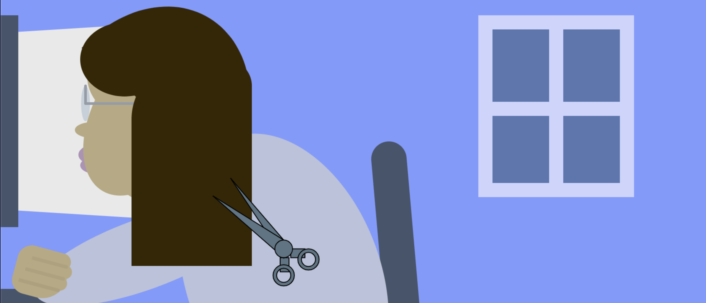

Pandemic Time
Pandemic Time: An Experimental Clock
2021
To interact with me, watch the computer screen, the figure's hair, the colors in the background, and the light coming from the window. Mouse over the drawing, and see what happens. Feel the colors, the elements, the blinking lights - feel safe remembering, allow yourself to grieve.
In this project, we were prompted to design and code a clock that expressed time in a creative and original way. This project was created for Critical Computation at Parsons during the Fall 2021 semester, under the instruction of Xin Xin and Katherine Moriwaki.
This project was a fascinating venue for communicating emotion through time. I used this sketch as a reflection upon time and grief in the global COVID-19 pandemic. During this period, time was rendered so differently from the way we had known it previously; days blurred together, hours bled into one another, and weeks slowed and sped by with no real pattern. 2020 was the year that conventional, standardized time was exposed as the arbitrary, self-imposed regulator, and I wanted to capture that in this sketch.
I randomized the shades of grey in the monitor screen to make the screen look more naturalistic, like it was giving off flickering light. This sketch also allowed me to play with color, see how temporal elements impact emotion, and begin to see my personal artistic style shine through. I will likely to include similar elements in future sketches: I like how the eerie pastels pair with the visual manifestations of time.
Creating this sketch was cathartic for me. I sought out to communicate the strange sense of time that I felt during the pandemic, knowing that though it may not have resembled everyone's experience in quarantine, it had the potential to tap into that collective experience.